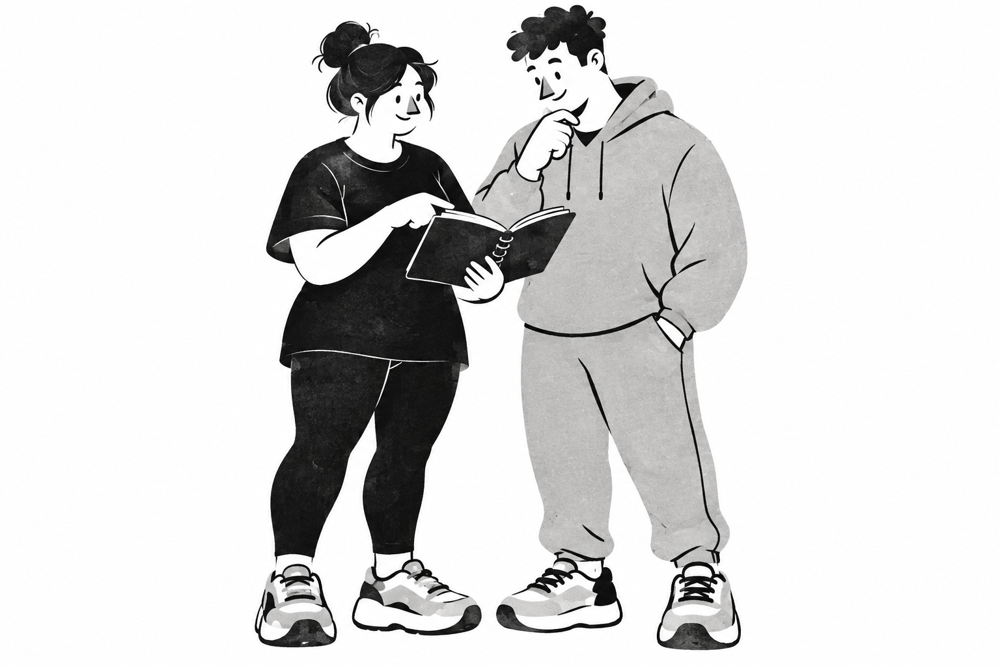

Студийное расписание
Точность времени и плотность списка. Хорошо для рабочего дня, но клиент может чувствовать себя строкой в расписании.
Сильная операционная основаПредложение для обсуждения
Рабочий инструмент тренера, в котором клиент чувствует участие. Точное расписание и записи — в основе. Живые рисованные персонажи — в моменты знакомства.
Попробовать экраныИзолированное исследование. Основной прототип не изменён.

Сохраняем утверждённые цвета, шрифты и компоненты gymGO. Сравниваем характер продукта, а не придумываем ему новое имя.
Точность времени и плотность списка. Хорошо для рабочего дня, но клиент может чувствовать себя строкой в расписании.
Сильная операционная основаЗаписи и договорённости, которые связывают двух людей. Точный интерфейс и небольшая рисованная история рядом с ним.
Рекомендуемое направлениеБольше воздуха и внимания к личному опыту. Подходит клиенту, но сложнее переносится на насыщенное расписание тренера.
Приём для спокойных состоянийТри интерактивных фрагмента. Данные вымышленные; всё сохраняется только в памяти этой страницы и сбрасывается при обновлении.
Сначала — то, что происходит сейчас.
Понедельник, 14 сентября
Результаты отдельно для каждого
Персональная · Низ А
Время зафиксировано для сравнения экранов.
Прошедшие занятия доступны, но не отодвигают текущее. В рабочем расписании нет декоративной иллюстрации.
Ближайшая встреча всегда на своём месте.
Ближайшая тренировка
Низ А · С Данияром
✓ Время подтвержденоДля другой тренировки
Ждём ответа тренера.
Прежнее время остаётся в силе.
Запрос на будущий перенос не подменяет ближайшую встречу. Цвет поддерживает текст, а не заменяет его.
Кто, что и сколько — без потери контекста.
Силовая А · 20:00–21:00
В прошлый раз: 8 кг × 12
Вес одной гантели. Значения предыдущего занятия не записываются автоматически.
Начните с первого подхода.
Попробуйте переключить участника и вернуться. Завершение проверяет всю группу; изменение записанного значения снова делает строку черновиком.
Не украшение каждого экрана. Небольшая семья рисунков для знакомства и первого шага. Без фотографичности, спортивного пафоса и выдуманных достижений.
Расписание, программа и результаты
ваших тренировок — в одном месте.
Для клиентов бесплатно · Демо
Рисунок показывает совместное планирование. Имя реального приглашающего тренера остаётся отдельным и главным.
Тренер добавит упражнения
перед первой тренировкой.
Пустой блокнот объясняет отсутствие программы. Клиенту не предлагается действие, которое может выполнить только тренер.
Новые изображения созданы встроенным GPT Image. Исходный реалистичный вариант и его видео исключены из текущего направления; сохранены только в архиве исследования. Промпты и происхождение файлов.
Новая проба Seedance 2.0 на основе рисованной иллюстрации. Без звука, автозапуска и зацикливания. Рисунок остаётся полноценным вариантом без видео.
Фактически: 5,042 с, 1112 × 834, 24 кадра/с. Сервис изменил формат на 4:3; видео показано без обрезки. Детали лиц и текстура слегка меняются — это проба, не утверждённый финальный материал.
Открыть видео отдельноШторка появляется, потому что вы открыли запрос. Подход получает отметку, потому что вы его записали. Ожидание человека не пульсирует бесконечно.
Переключение участника и ввод значений. Никаких выезжающих форм между подходами.
Предложенное появление и закрытие шторки. Сохраняем исходную кривую, возвращаем фокус на кнопку. С клавиатуры — мгновенно.
Рисунок уже завершён без видео. Анимационная проба запускается только по вашему действию; она не объясняет технику упражнений.
Системное «Уменьшение движения» действует всегда. Переключатель над экранами позволяет сравнить поведение вручную. Интервалы — предложение для проверки, а не результат пользовательского теста.